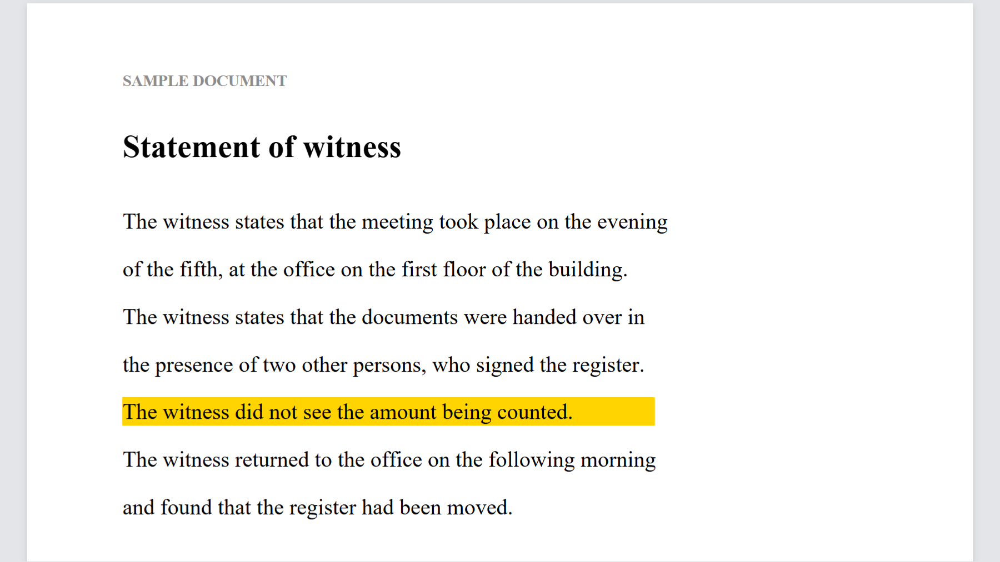
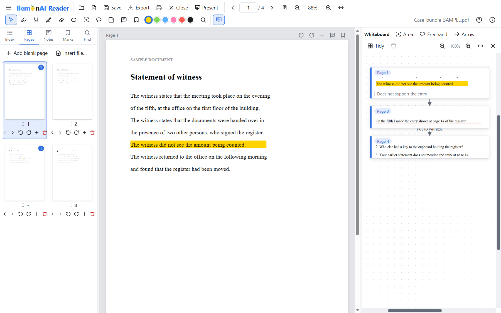

When you share your screen to show a PDF, your audience sees everything on it: your desktop, other windows, chat pop-ups, notifications and your private notes. For a lawyer in a virtual hearing, a tutor with an answer key open, or a trainer with email in the background, that's a real problem. This guide shows how to share only the PDF page.
Why "Share screen" shows too much
Zoom, Microsoft Teams and Google Meet all offer two kinds of sharing:
- Entire screen: viewers see everything you see, including anything that pops up.
- A single window: viewers see only that window.
Sharing one window is safer, but if that window is your PDF reader, viewers still see its toolbar, thumbnails, and any notes or comments you've written beside the page. What you want is a window that contains only the page.
The method: a separate audience window
llemonAI PDF Annotator is a free PDF reader and annotator for Windows and macOS (with an Android version for reading and marking up). Its Present button opens a second window that shows only the PDF page. That window follows what you do in the main window: page changes, zoom, scrolling, highlights and pen strokes appear as you make them. Your toolbar, thumbnails, notes and whiteboard stay in the main window, which you don't share.

Step by step
- Open your PDF in llemonAI PDF Annotator.
- Click Present in the top toolbar. A second window opens, named llemonAI PDF Annotator - Audience.
- Start sharing in your meeting app, and choose to share a window, not your entire screen:
- Zoom: click Share Screen, then pick the llemonAI PDF Annotator - Audience window.
- Microsoft Teams: click Share, choose to share a window, then pick the audience window.
- Google Meet: click Present now (or the share button), choose A window, then pick the audience window.
- Work in the main window as usual. Turn pages, zoom, highlight and write with the pen; viewers see each change on the page.
- When you're done, stop sharing in the meeting app and click Present again to close the audience window.
Both steps matter. Clicking Present alone hides nothing from the call. If you then share your entire screen, viewers still see everything on it. Always share the audience window.
Teaching or arguing with the page
- Point things out live: select text to highlight or underline it, or draw with the pen. Viewers watch each stroke as you draw it.
- Keep your notes private: notes attached to text, page notes and the whiteboard stay in your main window.
- Jump straight to what you need: use the Pages and Index tabs, search for a sentence, or click a box on your whiteboard; the audience sees that page.
- Skip pages you don't want to show: hide a page with the eye button on its thumbnail; presenting skips it.

On a projector instead of a call
The same audience window works on a projector or a second screen:
- Windows: connect the projector, press Windows + P, choose Extend, then click Present. With Duplicate, the projector shows your whole screen.
- Mac: connect the projector, open System Settings → Displays and use it as an extended display, not a mirror, then click Present.
Common problems
- Viewers see my desktop: you shared the entire screen. Stop sharing and share the audience window instead.
- I can't find the audience window in the share list: click Present first, then start sharing; the window must be open to appear in the list.
- Presenting on Android: the Android app has the reading and annotation tools but no Presentation mode. Use Windows or a Mac to present.
Quick checklist
- Open the PDF, click Present.
- Share a window, not the screen: llemonAI PDF Annotator - Audience.
- Annotate in the main window; viewers see only the page.
- Projector: Extend, not Duplicate.
Try it free: llemonAI PDF Annotator
Free for Windows 10/11, macOS 12+ and Android (Presentation mode on Windows and Mac). No installer, no account, no upload.
Download PDF Annotator